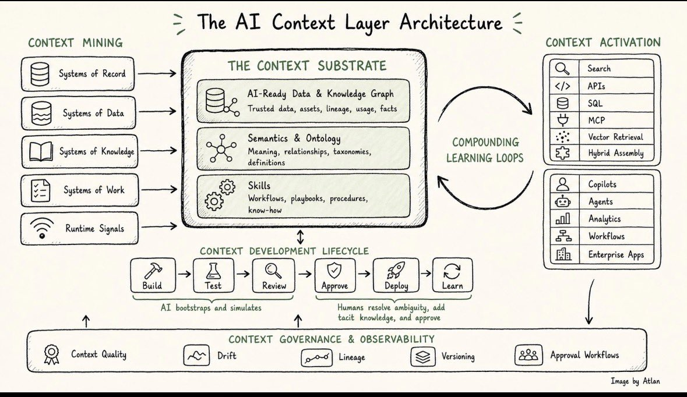

A published copy of the X long-form article by @prukalpa, plus a concise summary, the architecture diagram,
and the extracted thread context that followed the post.
The article argues that an enterprise context layer is not just a semantic layer, catalog, or memory store. It is the shared system that makes business knowledge, operating know-how, and governance usable by AI agents.
It frames enterprise context as three ingredients: knowledge, expertise, and norms. In the platform substrate, those become AI-ready data plus knowledge graph, semantics plus ontology, and reusable skills.
The author says the real advantage is compounding. Later agents should inherit what earlier agents learned instead of each agent acting like a fresh hire with no durable context.
The system only works if it also handles five capabilities around the substrate: mining context from fragmented systems, managing a development lifecycle for context, turning interaction traces into learning loops, activating context across many interfaces, and governing drift, quality, lineage, and approvals.
The piece draws a hard boundary against “context islands.” A company with separate memory, analytics, process, and agent stacks may have useful tools, but it does not yet have a shared context layer if knowledge cannot move cleanly between them.
The closing claim is strategic: the next winners in enterprise AI will not merely have strong models, but stronger context compounding underneath those models.
Key Distinctions
Not a data catalog: catalogs help humans find tables; context layers serve AI systems directly.
Not just a semantic layer: semantics matter, but the full layer also includes data substrate and executable skills.
Not just memory: long-term memory is one input into a broader governed system.
Not one interface: activation has to translate into APIs, SQL, MCP, vector retrieval, search, and workflows.
Not a static asset: the layer needs lifecycle management, review, approval, deployment, and feedback loops.
Architecture Diagram
The follow-up reply from the author included a diagram that maps the substrate, the five capabilities around it,
and the compounding learning loop between context creation and context activation.

Diagram captured from the author's thread reply. The image shows context mining feeding a context substrate, then activation,
development lifecycle, governance, and compounding learning loops around it.
Full Article
This section renders the full extracted article text. The summary above is editorial; the content below preserves the source wording from the captured post.
The post drew replies about multiplayer memory, agent experience, and AI-native workspace design. The author also answered two follow-up questions directly in-thread.
Show extracted replies, quoted posts, and diagram transcription